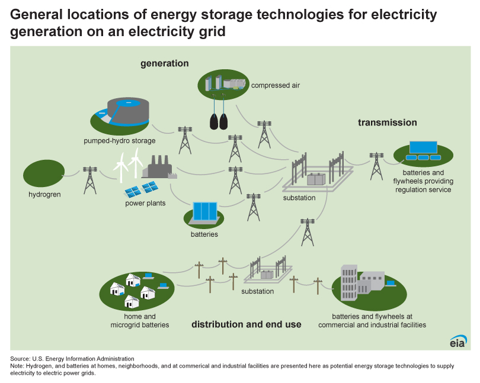
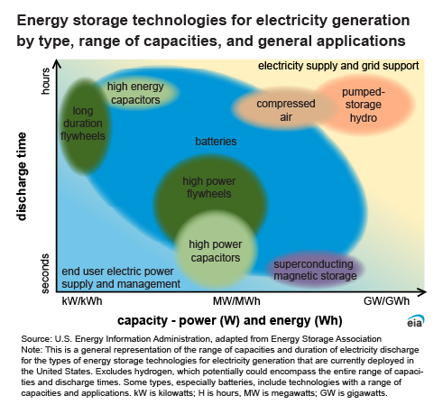

Mokelumne Project Notes
1 Energy storage
An energy storage system (ESS) for electricity generation uses electricity (or some other energy source, such as solar-thermal energy) to charge an energy storage system or device, which is discharged to supply (generate) electricity when needed at desired levels and quality.
1.1 EES Technologies
The types of ESSs in commercial use in the United States, in order of total power generation capacity as of the end of 2022 are:
- Pumped-storage hydroelectric
- Batteries (electro-chemical)
- Solar electric with thermal energy storage
- Compressed-air storage
- Flywheels
- Capacitors (R&D)
- Super-conducting magnetic storage (R&D)
- Hydrogen
- Thermal ice-storage systems

1.2 Categories of EESs
Two basic ratings for energy storage systems are:
- Power capacity—the maximum instantaneous amount of electric power that can be generated on a continuous basis and is measured in units of watts (kilowatts [kW], megawatts [MW], or gigawatts [GW])
- Energy capacity—the total amount of energy that can be stored in or discharged from the storage system and is measured in units of watthours (kilowatthours [kWh], megawatthours [MWh], or gigawatthours [GWh])
Two general categories of ESSs based on the size of power generation capacity:
Utility scale or large scale have at least 1 MW of net generation capacity and are mostly owned by electric utilities or independent power producers to provide grid support services.
Small scale have less than 1 MW of net generation capacity, and many are owned by electricity end users that use solar photovoltaic systems to charge a battery.
ESSs are not primary electricity generation sources. They must use electricity supplied by separate electricity generators or from an electric power grid to charge the storage system, which makes ESSs secondary generation sources. ESSs use more electricity for charging than they can provide when discharging and supplying electricity. Gross generation reflects the actual amount of electricity supplied by the storage system. Net generation is gross generation minus electricity used to recharge the storage system and the electricity consumed to operate the energy storage system itself.
1.3 Timescales of energy storage
ESSs are designed to supply electricity on varying timescales, which is reflected in the duration of their discharge-generation cycle length, and they can be grouped into two general categories according to their usual duration and main use:
Short duration—on the scale of minutes and power oriented
Diurnal or daily duration—on the scale of hours and energy oriented

1.4 Grid-scale energy storage
These are technologies connected to the power grid that can store energy and supply it back to the grid at a more advantageous time, like when the sun is down at night, or when the wind doesn’t blow. Pumped hydro is the most used tech, but can only be done in certain locations (though that is changing with off-river sites). Batteries are also now playing a growing role too.
The Net Zero Emissions by 2050 (NZE) Scenario envisions both the massive deployment of variable renewables like solar PV and wind power and a large increase in overall electricity demand as more end uses are electrified. Grid-scale storage, particularly batteries, will be essential to manage the impact on the power grid and handle the hourly and seasonal variations in renewable electricity output while keeping grids stable and reliable in the face of growing demand. This scenario also meets key energy-related United Nations Sustainable Development Goals (SDGs), in particular by achieving universal energy access by 2030 and major improvements in air quality. It is consistent with limiting the global temperature rise to 1.5 °C with no or limited temperature overshoot (with a 50% probability), in line with reductions assessed in the IPCC in its Sixth Assessment Report.
2 Pumped Hydro
Pumped-storage hydroelectric (PSH) systems are the oldest and some of the largest (in power and energy capacity) utility-scale ESSs in the United States and the world.
- clean, flexible, hydroelectric energy storage technology
- absorbs surplus energy at times of low demand and releases it when demand is high
- Supports ever-growing proportion of variable renewable energy
- As more wind and solar become available, PSH can integrate the indeterminacy and seasonality of variable renewable (can’t forecast the sun a wind a year out…)
- provide storage capacity to reduce curtailment during oversupply
- provide inertia to stabilize grids, frequency control, voltage regulation, storage and reserve power with rapid mode changes, and black-start capability
- long asset life, low-lifetime cost and independence from raw materials
2.1 How it works
Water is pumped from a lower reservoir to an upper reservoir in times of high electricity supply and/or low demand. During times of low supply and/or high demand, water from the upper reservoir is released into the lower reservoir, generating electricity as it moves through a turbine. So it operates like a conventional hydropower plant, but it can reuse water over and over.

Broadly speaking, the energy storage capacity depends on the size of its two reservoirs, while the amount of power generated is linked to the size of the turbines. For example, a facility with two reservoirs roughly the size of two Olympic swimming pools, and a 500 meter height difference between them, could provide a capacity of 3 MW and store up to 3.5 MWh of electricity. PSH systems are generally operated most often during summer months to help meet daily peaks in electricity demand that are often the result of increases in cooling demand by utility customers.
2.2 Open- vs. closed-loop
Open-loop pumped hydro has either an upper or lower reservoir that is continuously connected to a naturally flowing water source such as a river. Closed-loop pumped hydro has an ‘off-river’ site that produces power from water pumped to an upper reservoir without a significant natural inflow.

2.3 Demand & trends
PSH was first used in Italy and Switzerland in the 1890s, by the US by 1930 (with most built in the 1970's), and is now used worldwide. New PSH faces many challenges (licensing, remunerate services), so little development over the past 30 years. But it is undergoing a renaissance in countries where wind and solar power are also growing, helping allay concerns about weather-related dips in renewable energy output.
Global stats from IRENA (2023):
- Global renewable power capacity = 3371 GW = 3.3 TW = 40% of all power
- global human population at 10 billion by 2050; when developing counties reach advanced needs, world will need 200,000 TWh/year (Blakers et al. 2021)
- 295 GW added in 2022 (9.6% increase; 83% of power additions)
- solar = 192 GW, wind = 75 GW
- to meet NZE and 1.5 C warming, need 1000 GW per year
- Global hydro power capacity = 1392 GW = 1.40 TW (vs. 1310 GW in 2019)
- Pumped hydro power capacity = 137 GW (21-22 GW in US)
U.S. stats from the EIA (as of 2022):
- 40 PSH systems in operation across 18 states
- Total power capacity = 22,000 MW = 22 GW (vs. 8 GW for batter ESSs)
- largest plant is Bath County facility in Virginia: six generators, each 477 MW power capacity for a combined total of about 2,860 MW
- smallest and oldest PSH facility is the Rocky River plant in Connecticut, which began operation in 1928 and has two generators each with 3.5 MW of nameplate power capacity and one generator with 24 MW nameplate power capacity.
- newest PSH system is the Lake Hodges Hydroelectric Facility in California, which became operational in 2012 and has 42 MW of nameplate power capacity.
- Five states—California, Georgia, Michigan, South Carolina, and Virginia—combined, had 61% of the total U.S. PSH nameplate power generation capacity in 2022, and they accounted for about 67% of total gross electricity generation from PSH facilities in 2022.
2.4 Future Potential
There is significant potential for scaling up global pumped hydro capacity, including from more than 600,000 identified off-river sites (Stocks et al. 2021). Currently over 100 projects in pipeline, and pumped hydropower storage capacity is expected to increase by almost 50 per cent – to about 240 GW by 2030 (IHA 2018).
A May 2023 NYT article highlighted the the shift away from conventional hydro and rapid rise of pumped hydro across the world. It summarized data from the GEM’s Global Hydropower Tracker. Some takeaways:
- China is ambitiously planning new pumped hydro (now surpassing Europe’s capacity)
- In US and AUS, legislation has spurred new renewable energy projects
- Conventional hydro (reservoir and non-reservoir dams) aren’t dead. China and sub-Saharan Africa have many planned for cheap electricity
- China accounts for about half of global growth in renewables: now leads world in wind/solar/hydro capacity (but still loves coal)
- Run-of-river facilities on the rise in mountainous places (Nepal)
- Conventional dams have big problems
- environmental (habitat loss, environmental flows)
- methane releases (3-7% of human emissions)\
- safety (earthquakes)
- water evaporation
The figure below shows that whilst there is a sizable pipeline under development / permitting, most PSH under construction is in East Asia, principally China (80% of planned projects worldwide).

The IHA’s also has a Pumped Storage Tracking Tool that maps the locations and vital statistics for existing and planned pumped storage projects. It claims it is the most comprehensive online resource on the world’s ‘water batteries’.
2.5 Knowledge gaps
The 2020 International Forum on Pumped Storage Hydropower (IFPHS) identified three key impediments to more pumped hydro:
- Furthering PSH potential: install at old mines, underground caverns, non-powered dams and conventional hydropower plants, as well as location agnostic underground PSH, off-river PSH and seawater PSH, represents vast untapped potential
- Retrofitting and upgrading PSH systems: latest technological advancements, such as the use of variable speed pump-turbines and hydraulic short circuit, can enhance the services provided by existing PSH
- Developing hybrid systems: coupling PSH with batteries, floating solar PV, heat storage and desalination can provide additional services with reduced costs and environmental impacts
3 Mokelumne Water Battery Project
3.1 Project description
By 2030, 60 percent of CA’s energy must come from renewable resources, and by 2045, 100 percent. But wind and solar are not available all the time. The GreenGen Storage Mokelumne Water Battery Project will reduce California’s reliance on fossil fuels by meeting the state’s energy demands with reliable renewable energy. It takes advantage of two existing hydroelectric reservoirs in CA’s Sierra foothills, so few environmental impacts. Without pumped hydro, CA will have to rely on fossil fuels to integrate variable renewables (in 2018, CA curtailed ~ 460,000 MWh, enough to power 80,000 households).
- 400 MW power capacity
- 4,000 MWh of energy capacity
- 2 reversible pump-turbines
- 8-10 hours of energy storage
- will move approx. 3,000 acre-feet of water back and forth

3.2 Benefits
- Provide carbon-free electricity, thereby reducing GHG emissions
- Meet the state’s energy and emissions goals
- Create hundreds of construction jobs and approximately ten permanent jobs
- Provide local economic stimulus throughout project development and operation
3.3 Environmental Impacts
“The project leaders have spent their careers working towards environmental causes and encouraging renewable energy. Project development will be guided by this deep commitment to respecting and protecting existing environments and resource use where possible, and to mitigating changes where needed. The project team pledges to work closely with environmental resource agencies and interested stakeholders to ensure that this commitment is met.”
- Already a stressed system (and CC will make it worse)
- Water temperature and downstream impacts (model will look at impacts)
- Using Lower Bear (fewer impacts to cultural/bio resources and no new roads)
- No dam raises (no new inundation)
- footprint is 53 acres, all FS land
- 90% of facilities are underground
- 3,000 acre-feet of water back and forth (impacts on shore line)
- Biological
- Sierra yellow-legged frog
- Foothills yellow-legged frog
- Mesocarnivor and birds (great grey owl): buffer areas
3.4 Progress to date
- July 2016 - GreenGen App for preliminary permit
- Dec 2017 - FERC-issued preliminary permit
- Spring 2022 - initial engineering report
- Fall 2021 - engineering/cultural/environmental team site visits
- April 2022 - Pre-Application Document (PAD)
- Sep 2022 - Proposed Study Plan (PSP)
- Nov 2022 - Amended PSP
- Jan 2023 - Filed Revised Study Plan (RSP) with FERC
- Feb 2023 - FERC issued Study Plan Determination (SPD)
- Spring 2023 - water temp and hydrology models begin
- Summer 2023 - field studies (difficult with snow conditions)
3.5 Project Studies
Water Resources Studies
Biological Studies
BR-1: amphibians and reptiles
BR-2: wetland and riparian zone
BR-3: fish community and entertainment
BR-4: wildlife
BR-5: Avian communities
BR-6: benthic macro invertebrates
BR-7: invasive species
4 UW-Madison Project Overview
Goal: evaluate and mitigate potential impacts and co-benefits of the Mokelumne water battery project to the environment and stakeholders and evaluate alternative operations and configurations of the Mokelumne water battery project improve environmental outcomes and stakeholder satisfaction.
- modeling study of the combined thermal impacts of both climate change and a pumped-storage hydropower project proposed in the Mokelumne River in California
- climate induced changes in runoff regimes, particularly low flow periods, have potential to exert greater control on changing thermal regimes than warming climate or adverse impacts of reservoir operations
- increased storage provides an opportunity for environmental releases to counteract impacts to the thermal regimes during critical periods.
- develop a suite of potential scenarios describing a range of pumped-storage operations to identify practices that enhance, or minimize impacts on, thermal regimes of the reservoirs and downstream river reaches
- use historic and simulated future stream temperature records to apply a range of identified thermal niche models/ thermal tolerance metrics at locations downstream to determine the extent to which different strategies for describing individual species thermal niche agree in habitat outcomes
- conduct a literature review evaluating the temperature requirements of aquatic species to evaluate the significance of potential changes to the stream thermal regime
- includes a comparison of historic and forecasted future stream temperatures to thermal criteria set by resource agencies (NMFS) and whether these thermal criteria are achievable/realistic in a changing climate
- identify potential ecosystem co-benefits that could arise from innovative pumped-storage hydropower operations
- reduced thermal impairment of downstream river reaches
- reduced carbon emissions,
- maintenance of in-reservoir thermal regimes to support lake trout fisheries,
- enhanced streamflow during critical stages of the salmon life-cycle,
- increased availability of water rights,
- minimized flood risk,
- regulation of stream sediment transport,
- improvement of aquatic habitat,
- improvement in flow regimes to support downstream riparian vegetation and biota
Mechanism to achieve co-benefits:
- alteration of the magnitude and timing of pump-storage operations,
- increased reservoir storage,
- floating solar power,
- variable depth of pumped water extraction and injection,
- altered timing of reservoir releases
5 Relevant Groups
Clean Energy Ministerial (CEM)
- high-level global forum to promote policies and programmes that advance clean energy technology, to share lessons learned and best practices, and to encourage the transition to a global clean energy economy
U.S. Energy Information Administration (EIA)
- independent statistics and analysis of energy markets and trends
- Battery Storage in the United States: An Update on Market Trends
- explainer on electricity and energy storage
Global Energy Monitor (GEM)
- develop and share information in support of the movement for clean energy
- many trackers, including the Hydropower tracker
Global Renewables Alliance (GRA)
International Hydropower Association (IHA)
- “The global voice for sustainable hydropower”
- 2023 World Hydropower Congress, Bali, Indonesia, 31 Oct - 2 Nov
International Energy Agency (IEA)
- 2023 tracking clean energy progress report
International Forum on PSH (IFPSH)
- government-led multi-stakeholder platform to shape and enhance the role of pumped storage hydropower in future power systems
- created Nov 2020 chaired by US DOE
International Renewable Energy Agency (IRENA)
- intergovernmental organization mandated to facilitate cooperation, advance knowledge, and promote the adoption and sustainable use of renewable energy
United Nations (UN)
- “Peace, dignity, and equality on a healthy planet”
- intergovernmental organization whose stated purposes are to maintain international peace and security, develop friendly relations among nations, achieve international cooperation, and serve as a center for harmonizing the actions of nations
- COP28 - 2023 Conference of the Parties to the UN Framework Convention on Climate Change, Dubai, UAE
US DOE Water Power Technologies Office (WPTO)
- does R&D to understand and assess value of potential benefits of existing and prospective PSH (e.g., the HydroWIRES Initiative for grid reliability, resilience, and integration).
6 Glossary
Curtailment: when the sun shines and the wind blows more than is demanded, a system operator deliberately reduces the supply of electricity in order to balance the grid. Where storage does not exist, this means that renewable electricity is wasted and not stored for potential use in future
Evaporation suppressors: small plastic objects floated on a reservoir to reduce wind speeds and evaporation ratesPSH: pumped storage hydropower (US)
Head:
Load: electricity demand
Variable energy: power output rises and falls in response to, e.g., sun and wind